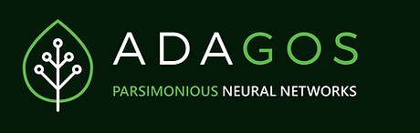

Le face à face
Green Tech
Dans cette comparaison, nous opposerons Agreenculture ainsi que Waltr pour une comparaion détaillée de : leur mode de fonctionnement, leurs modèles économiques, ainsi que leurs stratégies.
Dans cette comparaison, nous opposerons Agreenculture ainsi que Waltr pour une comparaion détaillée de : leur mode de fonctionnement, leurs modèles économiques, ainsi que leurs stratégies.
Caractéristiques |
 |  |
|---|---|---|
| Caractérisation de l’organisation | Start-up française | SAS de plus de 20 salariés |
| Historique, présentation du contexte, de l’idée | Issue du CNES, fondée en 2018, basée sur Toulouse et Nantes. | Entreprise qui conçoit et innove des solutions pour le monde agricole, crée en 2016 |
| Présentation de l’activité et des parties prenantes | La start-up propose des services afin de mesurer la qualité de l’air et de gaz a effet de serre à l'échelle des villes, pour permettre une analyse de celui-ci afin de faire face au changement climatique. WaltR est dirigé par un PDG au nom de Eric Pequignot et son cofondateur : Benoit Rader. | Le PDG Christophe Aubé, le DG Emmanuel Goua ont décidés de se lancer dans le domaine de l’agriculture et plus précisément dans la conception de robots réalisant des travaux agricoles |
| Description des modèles économiques | ||
| Présentation des/du produit ou service proposé | Propose des solutions innovantes dans l'objectif d'analyser la pollution présente dans l'air. Cette analyse passe par l'installation de caméras, de micro-capteurs, ou encore la mise en place de stations de mesure. | Conçoit des robots dédiés à des travaux agricoles sur des très grandes surfaces. |
| Listes des principales dépenses | L'entreprise dépense principalement dans la rercherche et le développement, ainsi que dans du meilleur matériel. | Les principales dépenses de l’entreprise sont dans la recherche et développement dans le domaine du guidage et positionnement, l’optique et l’IA, conception Mécanique et systèmes embarqués, le matériel pour la conception des robots |
| Listes des principales recettes | Vente de leurs produits et services. | Vente de robots agricoles |
| Type de modèle adopté | Production en propre | Production en propre |
| Etude des chaînes de valeur | ||
| Lister les activités principales | Proposer des services afin d’analyser la qualité de l’air dans une zone grâce a des innovations technologiques fabriqués par eux-même | Conception de robots agricoles autonomes dotés d'un géo-positionnement très haute précision. |
| Lister les activités secondaires | Recherche et développement d’outils, afin d’améliorer leurs services. | Recherche dans le développement et le domaine du géo-positionnement, guidage et IA. |
| Comparaison des choix stratégiques | ||
| Présentation des stratégies corporate et/ou business | -- | -- |
| Exemple de moyens de mise en oeuvre | Former leurs effectifs dans un domaine pouvant le servir dans leur futur projet d’innovation | -- |